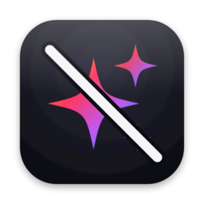
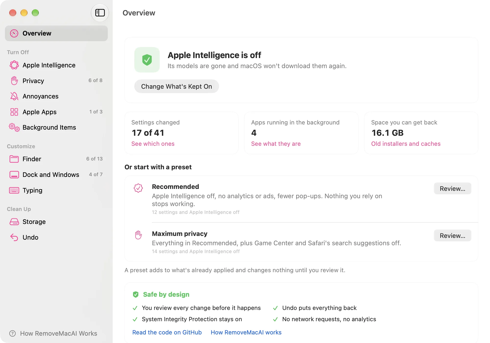
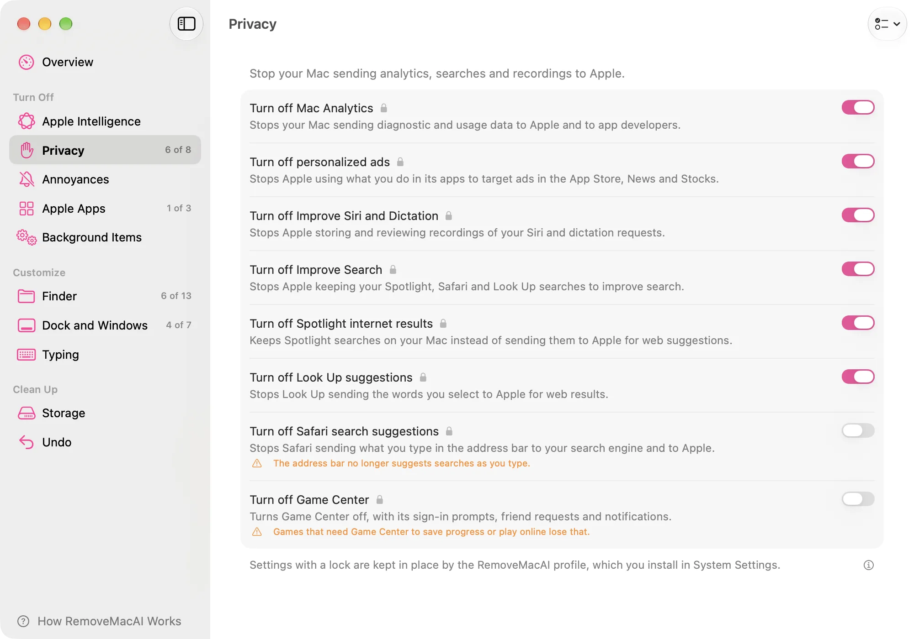
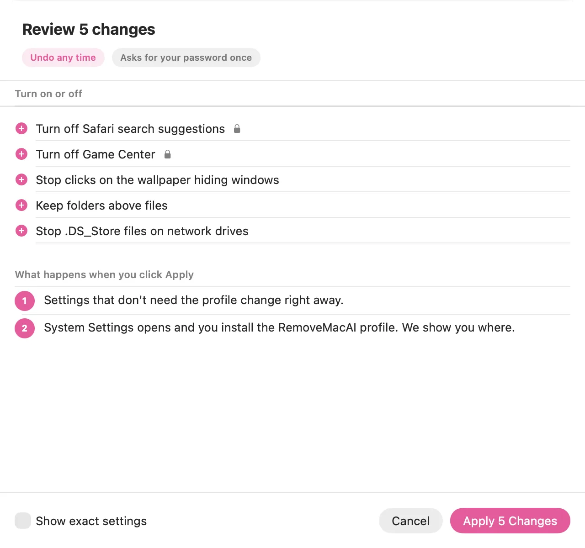

What each setting does
Each row says what the setting changes and warns you when something stops working, like games that need Game Center. Settings with a lock go into one configuration profile, and macOS asks you to approve it.

RemoveMacAIRemoveMacAI turns off Apple Intelligence and deletes its models. It also switches off Mac Analytics and personalized ads, fixes small things like the wallpaper click that hides every window, and clears out old installers and caches. You see each change before it happens and can undo it later.
Apple Intelligence removal builds on pared by 4evy.
Or from Terminal:
curl -fsSL https://raw.githubusercontent.com/omlahore/RemoveMacAI/main/install.sh | bash -s app

The Verge, Ars Technica, The Register, MacRumors, AppleInsider and Help Net Security have written about RemoveMacAI, and Daring Fireball linked to it.
macOS 27 has no single switch for Apple Intelligence, and turning the features off leaves the models on disk. RemoveMacAI switches each feature off, deletes the models and blocks macOS from downloading them again. If you use one of them, say Writing Tools, keep it on and its models stay.
0 of 12 switched off
Start from one of the two presets or go through the settings one at a time. Each says what it changes and what you lose, which for most of them is nothing.
Mac Analytics, personalized ads, Improve Siri and Dictation, Improve Search, Spotlight internet results, Look Up and Safari suggestions, Game Center.
Clicking the wallpaper hiding every window, desktop widgets, the media keys, iPhone Mirroring.
The Music app without the Apple Music store, Books without the Book Store, and the Apple apps you never open out of the Dock.
Show file extensions, hidden files and the path bar, keep folders on top, stop .DS_Store files on network drives and empty the Trash after 30 days.
Hide recent apps, drop the auto-hide delay and the bouncing icons, and turn off window animations and the gaps between tiled windows.
Turn off autocorrect, smart quotes and dashes, the double-space period and automatic capitals, and get key repeat back instead of the accent menu.
Google's updater and the other helpers apps leave running in the background, each with its own switch.
Old macOS installers, aerial wallpaper videos, iPhone update files, Xcode leftovers, app caches and Time Machine snapshots. Files go to the Trash, so you can still change your mind.
Each row says what the setting changes and warns you when something stops working, like games that need Game Center. Settings with a lock go into one configuration profile, and macOS asks you to approve it.

The review sheet lists every change and the exact command behind it. Undo restores the value each setting had before, and removing the profile undoes everything it locked.

RemoveMacAI uses a configuration profile, Apple's own asset service and the same preferences System Settings writes. Nothing under /System is modified.
They live on the sealed system volume, and removing them risks a Mac that won't start. RemoveMacAI quiets them instead and removes the optional apps Apple lets you delete.
RemoveMacAI makes no network requests and collects no data. The source is on GitHub, and every release is built from its tag with a provenance attestation.
Paste this in Terminal. It downloads the latest release, checks its checksum, puts RemoveMacAI in Applications and opens it.
curl -fsSL https://raw.githubusercontent.com/omlahore/RemoveMacAI/main/install.sh | bash -s appDownload RemoveMacAI.zip, unzip it and drag RemoveMacAI to Applications. The app isn't notarized, so the first time you open it, go to System Settings > Privacy & Security and click Open Anyway.
The same program, without the app. This command runs it once from a temporary folder and installs nothing.
curl -fsSL https://raw.githubusercontent.com/omlahore/RemoveMacAI/main/install.sh | bashbrew install omlahore/tap/removemacaiExport the profile and deploy it with Jamf, Kandji, Intune or any MDM.
removemacai export RemoveMacAI.mobileconfig --preset recommended
removemacai tweaks --json